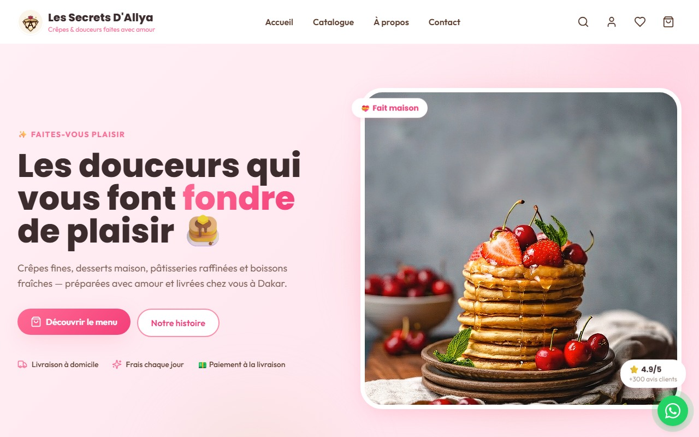

Client réel • Côte d'Ivoire

Les Secrets d'Allya 🥞
Terminé • En lignePlateforme e-commerce complète de crêpes et pâtisseries artisanales en Côte d'Ivoire, pensée comme une carte de restaurant digitale doublée d'un outil de gestion complet.
- Catalogue façon menu : filtrage par catégories, visuels gourmands, panier & favoris
- Livraison intelligente : sélection de la zone de livraison et calcul automatique des frais
- Back-office restaurateur : suivi du CA, top produits, gestion des stocks et statut des commandes
- Relation client : système d'avis clients vérifiés avec modération et contact rapide
Next.js 15TypeScriptTailwind CSSZustandDjango REST FrameworkVercel